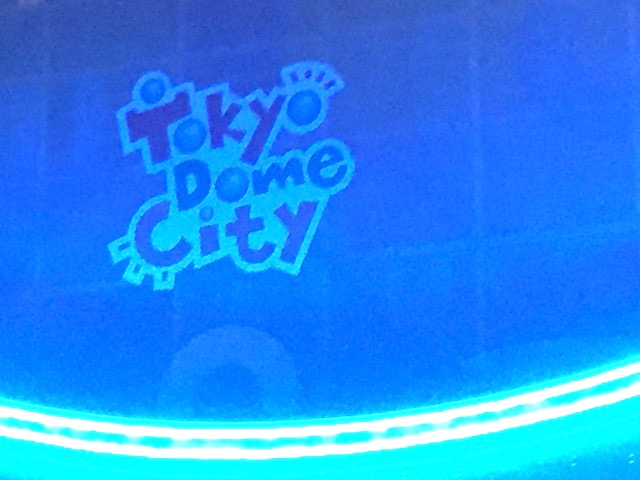
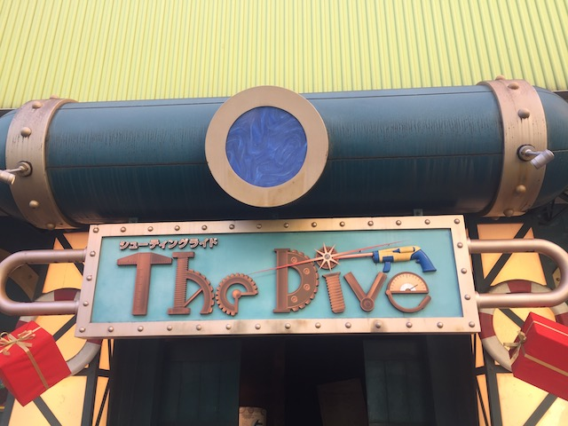
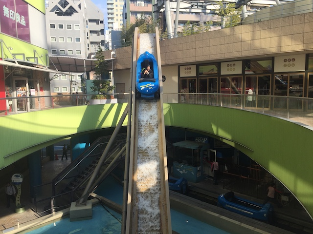
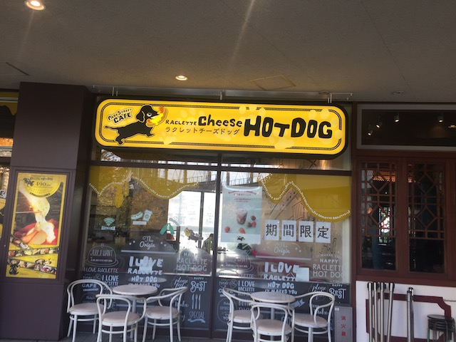

| |
Tokyo Dome City Review

Tokyo Dome City is....an intersting place. This is sort of like a small theme park, but at the same time, not really. It's the type of park that seems to be fitting into an outdoor mall. But....it's a lot of fun. I know when I visited the park, it was primarily Thunder Dolphin with a couple other rides in a small outdoor space right around the mall. However, if you look at the history of the park, it used to have A LOT more rides. They had several more coasters, including a Boomerang, an Ultra Twister (Aww, those rides are really fun. Always sad to see one close), Linear Gale was a Non-Twisting Impusle, and that weird indoor coaster. All Gone. All the park was was Thunder Dolphin, along with a few other crappy rides. Cause it's perfectly clear that if it wasn't for Thunder Dolphin, I would NOT have stopped here on my Japan trip. But it was a fun little park. Nothing special or fancy, but it was a lot of fun for a couple hours. And hey. They did just add a new coaster very recently since my last visit. So at least this park is heading in the right direction. =)
Rollercoasters
There is a link to a review of all the Rollercoasters at Tokyo Dome City.
Please keep in mind that there is no review of Panic Coaster because it didn't exist when I last visited (despite opening up less than 6 months after I visited. That ride came out of nowhere).
Top Coasters
Thunder Dolphin Review

Flat Rides
Here are all of the flat rides at Tokyo Dome City. Now I never rode any of them, but they're still worth talking about. Mainly, Tokyo Dome City is one of the few places left in the world that actually still has their parachute ride. These are a dying breed of ride. They keep dissapearing and the only other one I can think of still standing (and I rode it) is at Six Flags Great Adventure. Now this is the stand up version, which are apparently better. I didn't ride this since...I only got a few tickets for a couple Thunder Dolphin rides and one other ride, which I decided not to make the parachutes. If I had a wristband, I definetly would've bothered. And hey. Maybe next time. They also have a carousel, which is pretty standard. And on top of that, a ferris wheel. Ooh. I really wish I could've ridden that simply so I could've gotten even better shots of Thunder Dolphin. *drool*
 Anyone missing the parachutes and sad that they're gone, you can still ride them in Tokyo.
Anyone missing the parachutes and sad that they're gone, you can still ride them in Tokyo.
Dark Rides
Now the one other ride that I wound up doing at Tokyo Dome City was their dark ride, "The Dive". Why I chose to ride this, I don't know. But anyways, The Dive is....interesting. By almost all standards, this is a bad dark ride. The special effects are pretty crappy, and it just goes in a circle. I know I don't speak the language, but something gave me a feeling that if I could understand the dialogue, it would be even worse. And you can easily tell that. But....it was amusingly bad. This was one of those rides that's so bad, that it's good. Plus, it's a shooting dark ride, so you can shoot at stuff.

Yeah. I enjoyed this, but I really should've ridden something else instead.
Water Rides
OK. So if you're walking around Tokyo Dome City, there are two rides that are gonna stand out for you. One of which is Thunder Dolphin, which is obvious since....an Intamin Hyper in a small little park, yeah. Kind of hard to miss. The other ride would be Flume (yeah. The name sucks). It seems like a fun flume ride. Not because of the drop. That seems fairly small and not that impressive. But just floating around Tokyo Dome City looks like a lot of fun. I really wish I rode this ride instead of the dark ride. But hey. No big deal. I can always just hop on next time.

Note to self. Ride this log flume next time at Tokyo Dome City.
Dining
All right. The food at Tokyo Dome City is....kind of bland. This isn't typical amusement park crap that they serve at most theme parks. This is mall food. All the stuff you would find at the mall food court. The only food I noticed in the actual park is something called Cheese Dog. If you want something NOT AT ALL authentic or Japanese, Cheese Dog sounds like a good fit if your food MUST be American. However, Tokyo Dome City is just a small part of what the entire place has to offer. You see, Tokyo Dome City is just part of LaQua, which is part of the Tokyo Dome, the biggest stadium in all of Japan. There's some really good food over there. And even if not, you're in the middle of Tokyo! You're gonna find pretty much whatever the hell you want.

If you're afraid of anything authentic, Cheese Dogs will save you (though to be fair, a Raclette Dog does sound really good).
Theming and Other Attractions
Here are the reviews of all the other stuff at Tokyo Dome City. Well, as far as theming goes, there's nothing. The park is essentially part of a giant mall. An outdoor mall. There's no theming. But really. Why would you want any theming? You're right smack dab in the middle of Tokyo. Just enjoy it! Tokyo is fucking awesome! You're in a place that other parks draw inspiration for their theming! You don't need any theming over here! Now as for other stuff, nothing else at Tokyo Dome City specifically, but Tokyo Dome City is part of LaQua, which is basically a spa that apparently uses natural hot springs to help you relax? I don't see any evidence of natural hot springs as we're in the middle of one of the biggest cities on the planet. VERY URBAN place. However, you need to unwind and want a spa experience, apparently, you can get one at La=Qua, which is what Tokyo Dome City is a part of. And of course, there's the Tokyo Dome itself. If you're a fan of baseball, you might want to check out a baseball game over there. Now I don't give a crap about baseball, so that's not my cup of tea. However, a lot of people like baseball. If that's you, then Tokyo Dome would be a good place to see a game. Plus, if all that's not enough for you, you're in the middle of Tokyo! Get out and see the city!
 I may not care about sports, but baseball fans, go nuts.
I may not care about sports, but baseball fans, go nuts.
In Conclusion
Tokyo Dome City may not be the best theme park ever by any means. It's just a small little park with a couple rides. However, one of those rides is an Intamin Hyper that, while not the best of its kind, is still a ton of fun. But even putting Thunder Dolphin aside (which let's be real. If you're a coaster enthusiast, that's the primary reason you're here). The rest of the park looks like it has a couple fun rides. That log flume looks fun, the new coaster looks fun, the parachutes look fun. But even putting the rest of the park aside, there's a spa that's supposedly really nice. And on top of that, the park is right by the Tokyo Dome. Sure, there are several better small parks, and the zipper intolerance here is the worst out of all parks (I know almost all Japanese parks are zipper intolerant, which is one of the downsides of the country, but it's taken to a new level at Tokyo Dome City). But it's just a fun little park. But even if the rest of the stuff doesn't appeal to you, feel free to just swing on by, take a ride on Thunder Dolphin, and then get back to your amazing day in Tokyo. That works too.
Enthusiast FAQs.
*Are there kiddy coaster restrictions? - Tokyo Dome City doesn't have a kiddy coaster.

Tips
*Be sure to get at least one ride on Thunder Dolphin.
*Be warned about zipper intolerance. They'll pat you down, and....it's just a giant pain in the ass getting on Thunder Dolphin.
*You can pay for each ride, so if you just want to credit whore this place, you can.
*Be sure to check out the surrounding area as Tokyo is an amazing city.
*Have Fun!
Theme Park Category:
Small Park
Location
Bunkyo, Tokyo, Japan
Last Day Visited
November 7, 2018
Video
I don't think Tokyo Dome City is big enough to warrant a video. Possibly a small video, but even so, I did NOT shoot enough video for that.
Complete Update List
2018
JAPAN 2018!!! =)
Here's a link to the parks website.
Home
|